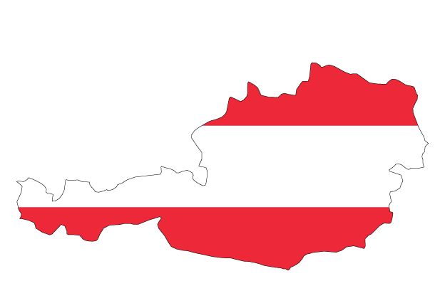
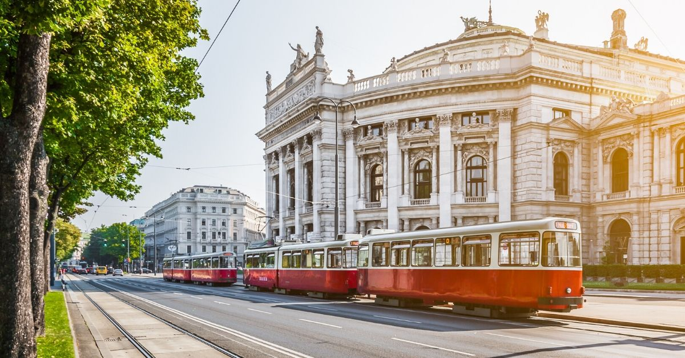
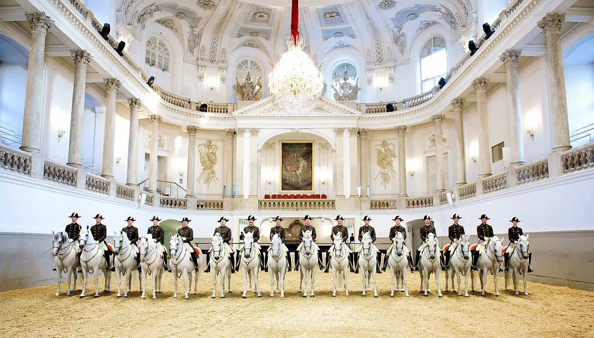
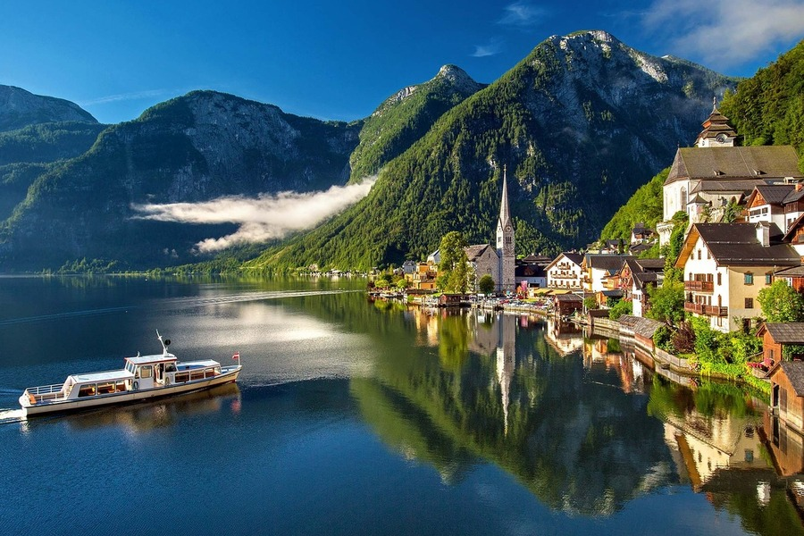

Austria : Arrive and Revive

This prosperous Alpine republic and its capital – Vienna – present an alluring image to the outside world.
Its scenic beauties draw visitors here in their millions in summer and winter, while millions more revel in its unsurpassed cultural heritage.
Its charm is legendary, its inhabitants welcoming, its cuisine heartily filling.
In many ways it seems a model country, a parliamentary democracy and member of the European Union whose
geographical location and neutral status has made it a bridge between East and West.
An ancient Latin epithet Felix Austria (‘O Happy Austria!’) would seem to apply today as much as
when it was coined several hundred years ago. But before reaching this enviable state, the country was beset by crises of identity
and a history more turbulent than most.
Austria is often called “heaven on earth” by those who visit because it’s just so beautiful that when you’re there,
it feels like you’re standing within the pages of a fairytale.Situated in Central Europe,
this German-speaking country oozes with imperial charm, natural beauty, rugged alpine terrain accompanied by cool fresh air.
Austria is a federal republic, so it is comprised of nine independent federal states, or provinces:
Burgenland, Carinthia, Lower Austria, Upper Austria, Salzburg, Styria, Tyrol, Vorarlberg and Vienna.
How to Get Around Austria

Public Transit – Public transportation prices will vary by city, but expect to pay around €2.30 EUR ($2.70 USD) for a standard adult ticket.
Most cities offer a multi-day pass, such as Vienna’s 24-hour pass for €7.60 EUR ($9 USD) or the 72-hour pass for €16.50 EUR ($19 USD).
Trains – Bus and train tickets to nearby cities outside of Austria, such as Bratislava, Prague, and Budapest, are quite affordable.
Expect to pay between €10-€30 EUR ($12-$35 USD) for a one-way ticket.
Bus – To get around the country, Flixbus is one of the most budget-friendly options.
The Flixbus from Vienna to Graz offers tickets for as low as €9 EUR ($11 USD), while the train ride costs closer to €30 EUR ($35 USD).
The 5-hour train ride from Vienna to Innsbruck costs around €55 EUR ($64 USD).
Budget Airlines If you’re pressed for time and are looking to jump from one city to the next, a budget airline might be the way to go.
There are several low-cost budget airlines that service Vienna including low-cost long-haul Level, easyJet, Eurowings, and Ryanair.
You can often find tickets where the fare is just €5 EUR ($6 USD) round-trip! EasyJet and Ryanair are two big budget airlines in the area,
but book in advance to keep costs down. For example, a flight from Rome to Milan costs as high as €115 EUR ($130 USD). Keep an eye out for deals.
Ridesharing – You can also try the ride-sharing app, BlaBlaCar. You can usually find rides for popular routes here,
though there is a nominal fee.
Places to Visit
Austria's Imperial Palace : Hofburg

The spectacular Hofburg Palace in Vienna was for centuries the seat of Austria's monarchy, the powerful Habsburgs.
Now the President conducts state business in the same rooms that once belonged to Emperor Joseph II.
Nearly every Austrian ruler since 1275 ordered additions or alterations,
resulting in many different architectural influences, including Gothic, Renaissance, Baroque, Rococo, and Classicism.
The Spanish Riding School

The Spanish Riding School dates back to the time of Emperor Maximilian II, the man responsible for introducing the famous
Lipizzaner horses into Austria in 1562. Today, it's one of the only places where the classical style of
riding preferred by aristocracy is still practiced. Viewing the famous equestrian displays in the Baroque
Winter Riding School - held here since the time of Charles VI - is a must when in Vienna.
The Spanish Riding School also has summer stables in Heldenberg-Wetzdorf-Lower Austria.
The 68 resident stallions are taken there in July and August for seven weeks, where they are kept in stalls with paddocks.
The horses are not schooled during this period, but instead are hacked in the nearby forest.
Hallstatt and the Dachstein Salzkammergut

Hallstatt, undoubtedly one of the most picturesque small towns in Austria, is a good place from which to explore the spectacular
Dachstein Salzkammergut region, a UNESCO World Heritage site. The beautiful Baroque architecture testifies to Hallstatt's wealth,
which is based on its long history of salt production from prehistoric times.
You can visit the underground salt lake in the nearby Hörnerwerk cavern, or explore the Dachstein Caves, one of Europe's most
impressive cavern networks, which are, in places, up to 1,174 meters deep.